BRATISLAVA – Ženska i muška ekipa Curling kluba Zagreb nakon samo jedne sezone ponovno je uspjela ostvariti pobjede u obje kategorije. Skiperica Iva Penava i zagrebačke Gombačice bile su u finalu uvjerljivije od ekipe CK Silent dok je kod muških ekipa jedanaesto zlato pripalo ekipi Alena Čadeža koji su u finalu svladali momčad CK Visa.
U ženskom finalu ekipa Zagreba već je u prvom endu ostvarila prednost od 3 boda i rutinski odigrala utakmicu do kraja ne dopustivši ekipi Silenta bilo kakav preokret. Silent je drugi krug prvenstva igrao bez kapetanice Melani Lušić te su sa svega tri igračice bile preslabe za osvajanje još jednog zlata. Ovom pobjedom Gombačice su došle do svog trećeg osvojenog finala. Zanimljivo je da su sva tri izborena upravo protiv vječnih rivalki iz Silenta, a trenutačni je omjer četiri tri u korist Curling kluba Silent.
Muško finale pripalo je Zagrebu u do kraja neizvjesnoj utakmici. Sve do posljednjeg udarca vice-skipa Mladena Domazetovića u sedmom endu pobjednik se nije znao, a upravo je taj end i odlučio pobjednika. Iako je samo malo nedostajalo da u veoma kompliciranom, ali dohvatljivom izbijanju Vis u zadnji end uđe s prednošću od dva kamena to se nije dogodilo. Sa svojim posljednjim kamenom Alen Čadež je postavio čuvara za svoja dva kamena u sredini i time napravio previd jer je sa desne strane ostao otvoren put za njihovo izbijanje. Da je Domazetović u tome uspio, CK Vis bi taj end uzeo sa četiri kamena i prešao s dva kamena u vodstvo u zadnjem endu. No njegov kamen izbija samo jedan protivnički kamen dok drugi ostaje bliži i CC Zagreb osvaja bod. Tako se u osmi end ulazi s prednošću Zagreba od tri kamena što je bilo dovoljno za pobjedu.
U borbi za treća mjesta prva i povijesna pobjeda pripala je novoj ženskoj ekipi Curling kluba Vis koju čine mahom stare igračice ugašenog CK Zapruđe. Predvođene skipericom Zrinkom Muhek one su došle do prve bronce pobijedivši ekipu CK Čudnovatog čunjaša. Kod muških ekipa prva medalja i brončano odličje pripalo je ekipi Legije II predvođene Antom Bausom. Ovo je za brodsku Legiju druga bončana medalja na Prvenstvu Hrvatske, a ove su godine bili bolji od ekipe Čudnovatog čunjaša.
Ovo je natjecanje bilo izlučno za odlazak na Europsko prvenstvo C skupine u Andori koje će se održati početkom svibnja u Andori.
Ukupni poredak – muškarci:
- Zagreb
- Vis
- Legija II
- Čudnovati čunjaš I
- Čudnovati čunjaš II
- Legija I
- Čudnovati čunjaš III
Ukupni poredak – žene:
- Zagreb
- Silent
- Vis
- Čudnovati čunjaš
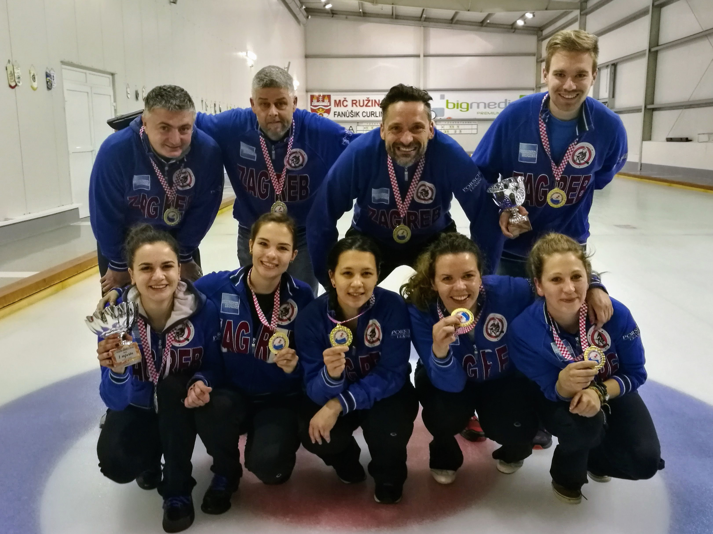
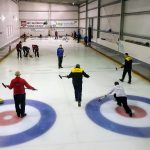
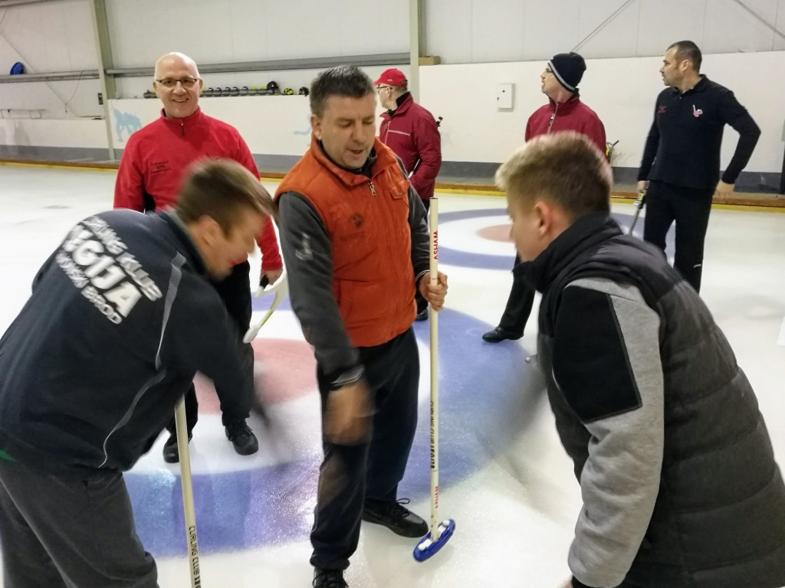
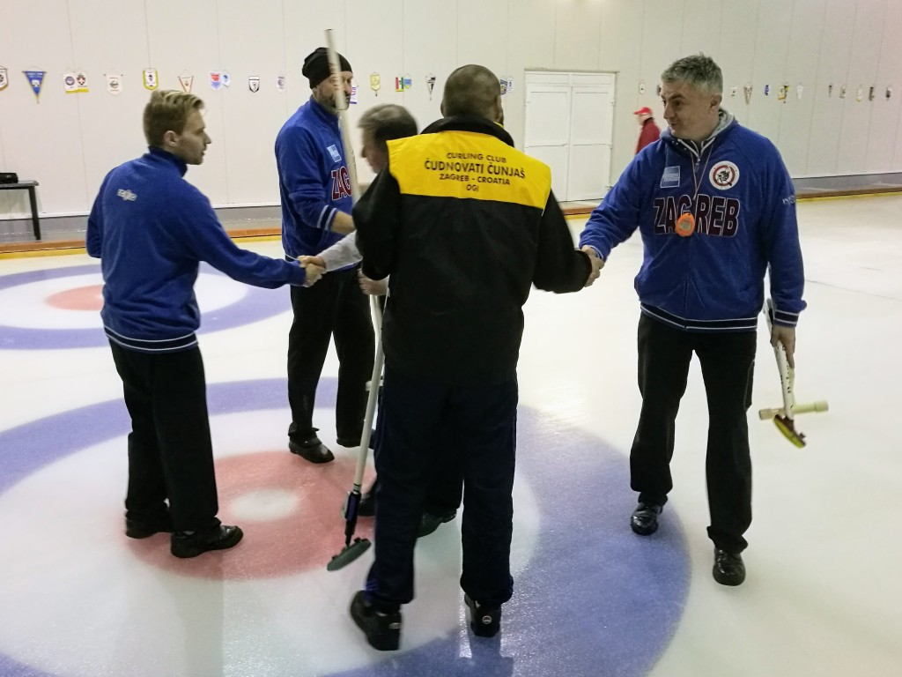
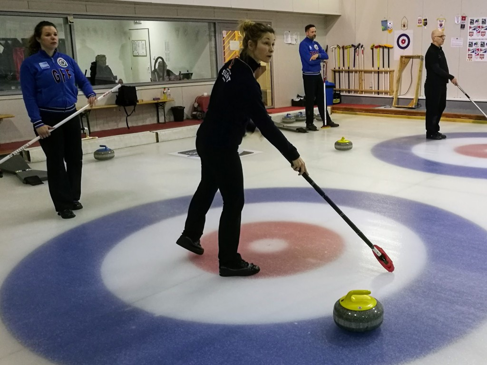
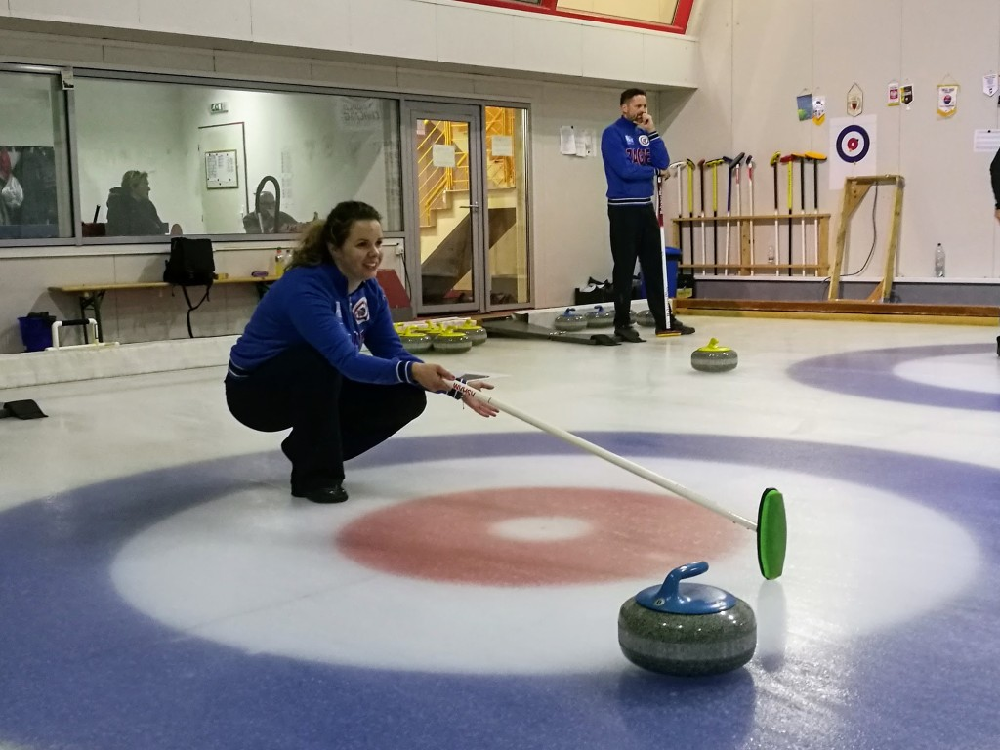
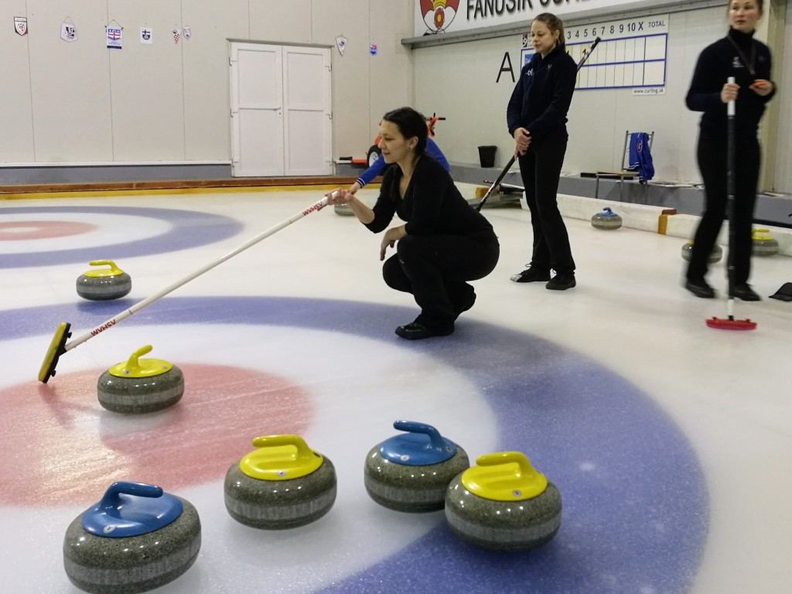
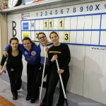
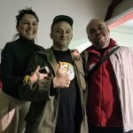
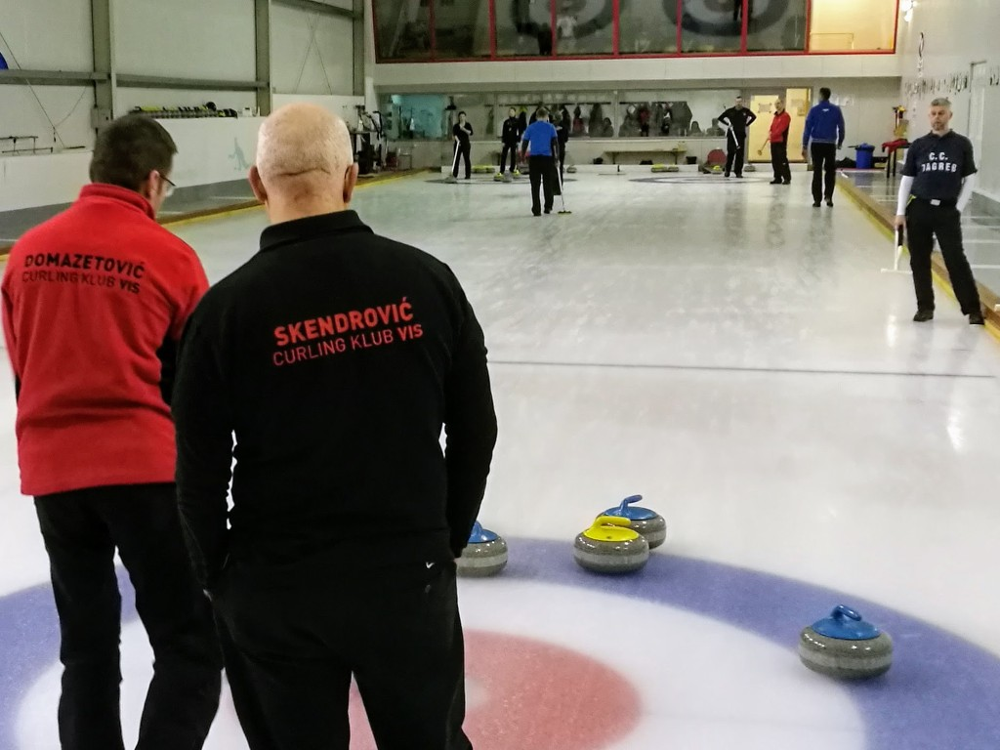
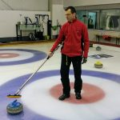
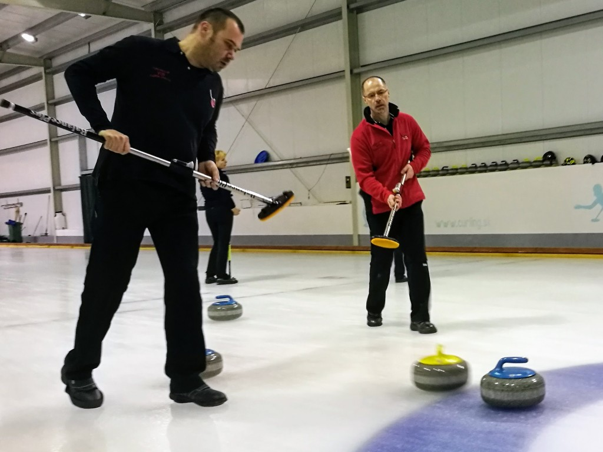
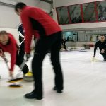
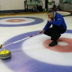
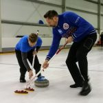
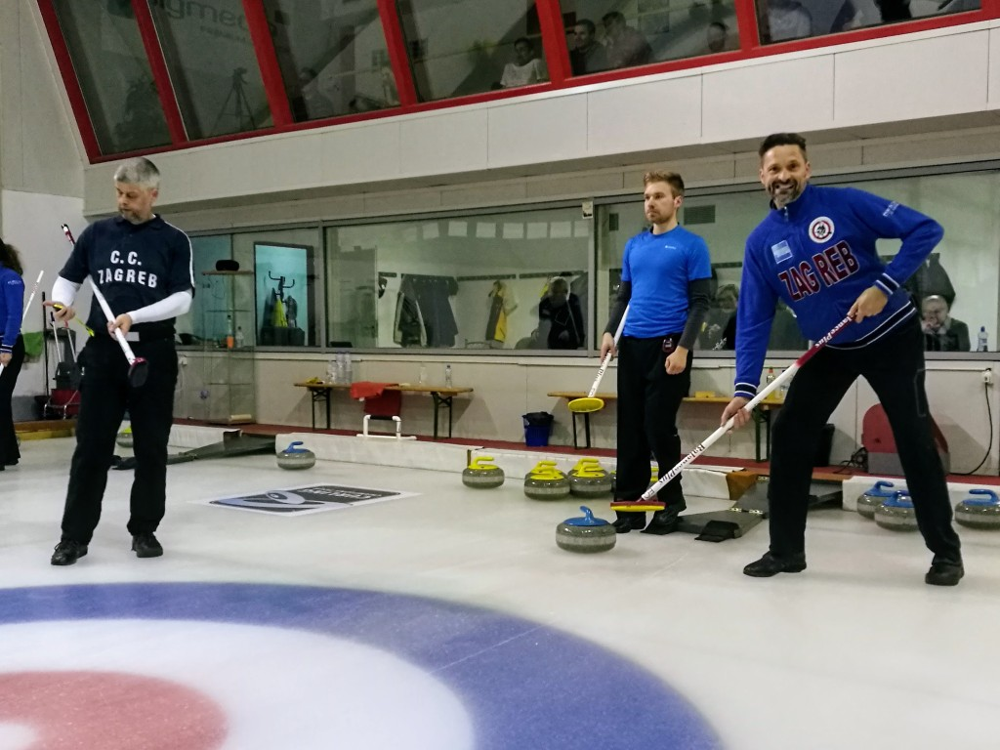
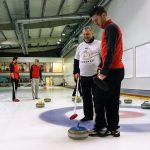
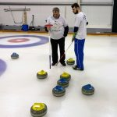
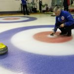
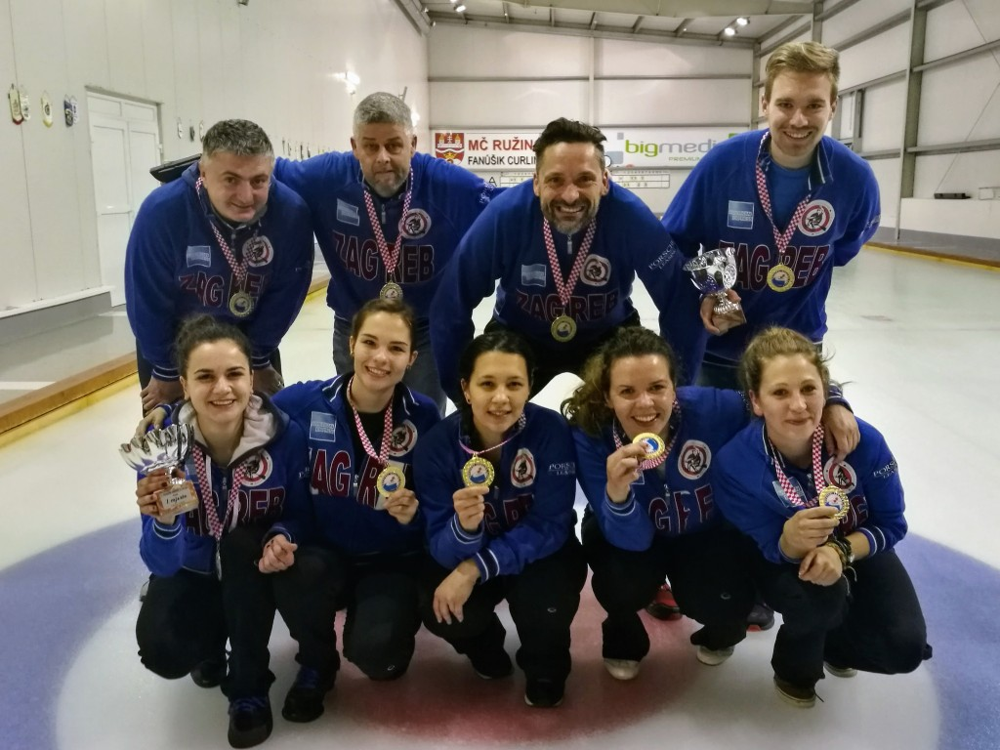
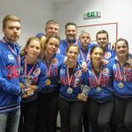
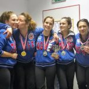
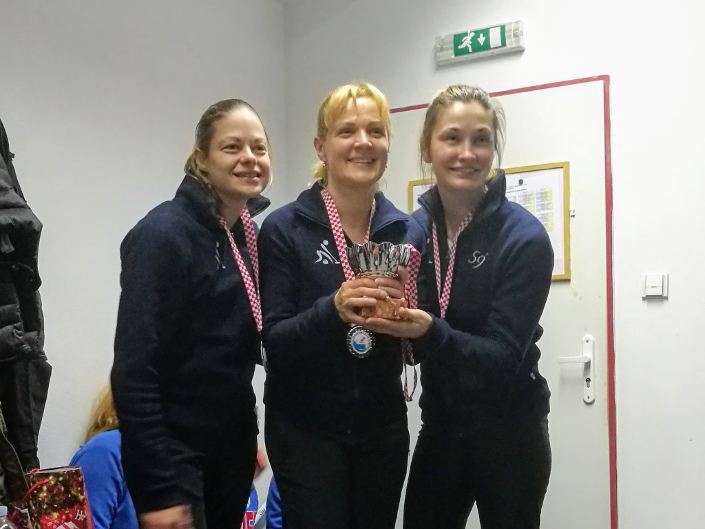
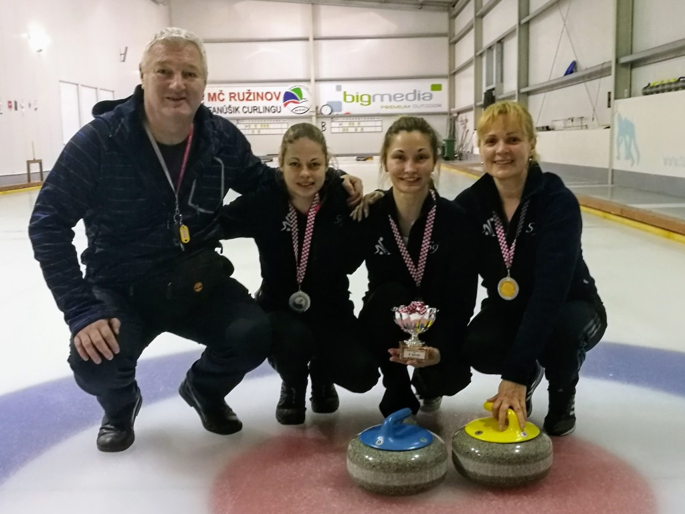
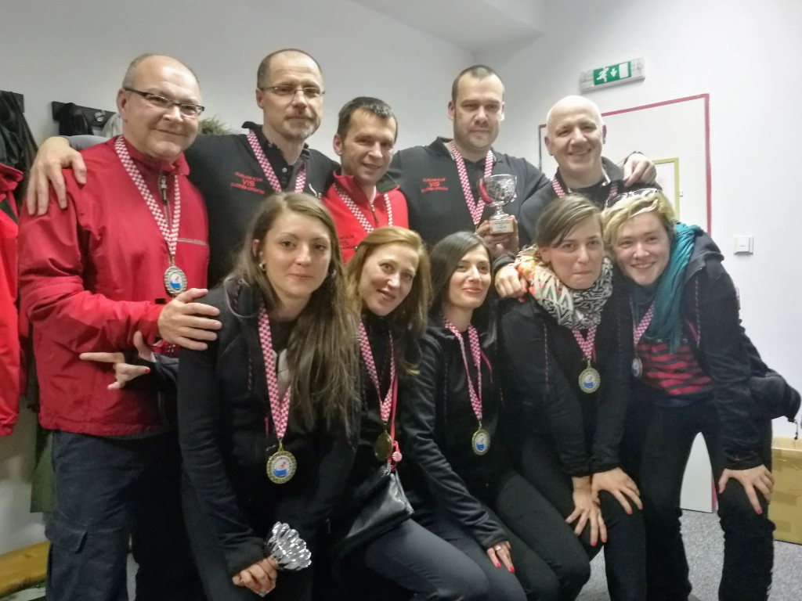
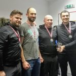
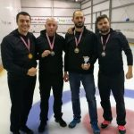